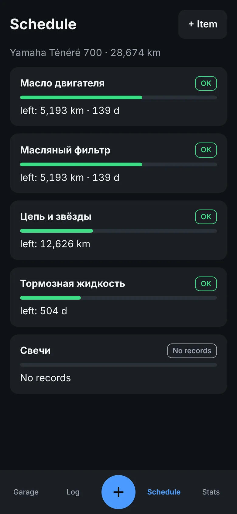
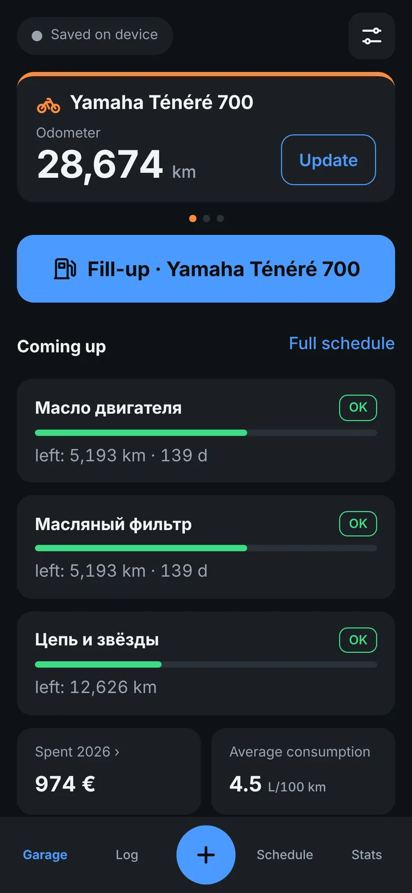

Дорога.The road. Гараж.The garage. Учёт.The logbook.
Канал о мотоциклах без глянца: поездки, обслуживание своими руками и честные цифры — во что на самом деле обходится владение.
A motorcycle channel without the gloss: rides, doing your own maintenance, and honest numbers on what owning a bike really costs.
Про мотоциклы — как есть.Motorcycles, as they are.
Снимаю то, что делаю сам: куда еду, что меняю в гараже и сколько это стоит. Без постановки и без обзоров «на один день».
I film what I actually do: where I ride, what I fix in the garage and what it costs. No staging, no one-day reviews.
ПоездкиRides
Маршруты, погода, усталость и всё, что не попадает в рекламные ролики.
Routes, weather, fatigue — everything the ads leave out.
Своими рукамиHands-on
Масло, цепь, тормоза, расходники: по шагам, с моментами затяжки и артикулами.
Oil, chain, brakes, consumables: step by step, with torque specs and part numbers.
Честные цифрыHonest numbers
Каждая заправка и каждый чек записаны. Из этого и выросли таблица и приложение.
Every fill-up and every receipt is logged. That's where the sheet and the app came from.





Tolimoto LogBETA
Журнал ТО и заправок для мотоцикла и машины. Помнит, когда менять масло, считает расход и траты — и хранит всё у вас.
A service and fuel log for your motorcycle and car. It remembers when the oil is due, works out consumption and spending — and keeps everything with you.
- Заправка в одно касаниеFill-up in one tapГлавная кнопка на первом экране, транспорт выбирается свайпом.The main button on the first screen; swipe to pick the vehicle.
- Регламент по пробегу и времениSchedule by distance and timeЧто и когда менять — с понятным статусом.What is due and when, with a clear status.
- Расход и тратыConsumption and spendingПо каждой заправке, по годам и цена километра.Per fill-up, per year, and the cost of a kilometre.
- Без регистрации и без сетиNo sign-up, works offlineЗаписи хранятся прямо на телефоне.Your records live on your phone.
- Google Таблица — по желаниюGoogle Sheets — if you wantСинхронизация в обе стороны, фото чеков на вашем Диске.Two-way sync; receipt photos on your own Drive.
- Импорт из FuellyImport from FuellyИстория заправок переезжает за минуту.Bring your fill-up history over in a minute.
У Tolimoto нет серверов с вашими данными. Записи лежат на устройстве, а если подключите Google — в вашей собственной таблице и папке на Диске. Приложение видит только файлы, которые создало само. Политика конфиденциальности
Tolimoto runs no servers holding your data. Records stay on your device and, if you connect Google, in your own spreadsheet and Drive folder. The app can only see files it created itself. Privacy policy
Бета для iPhone. Откройте в Safari → «Поделиться» → «На экран Домой», и приложение будет работать как обычное.
Beta for iPhone. Open it in Safari → Share → Add to Home Screen, and it works like a regular app.
С чего всё началось.Where it all started.
Бесплатный шаблон Google Таблицы: регламент, история работ и траты по годам. Скопируйте себе и ведите свой мотоцикл.
A free Google Sheets template: maintenance schedule, service history and yearly spending. Make a copy and log your own bike.
Сейчас — на русском. Английская, эстонская, польская, латышская и украинская версии готовятся.
Russian for now. English, Estonian, Polish, Latvian and Ukrainian versions are on the way.